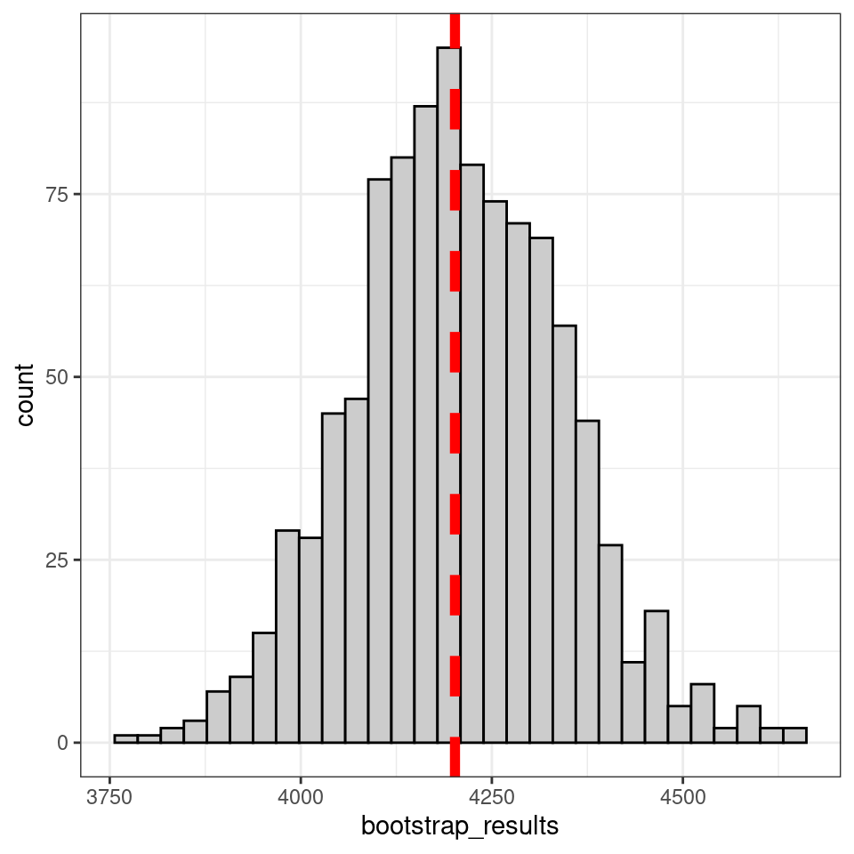

23 Parallel programming
Parallel computing is a method used to speed up processing by running multiple tasks simultaneously. This technique is common across many programming languages and is supported by modern multi-core processors. Think of parallel computing as having several computers working side-by-side on the same task—each one handles a piece of the work at the same time.
In the context of R, parallel computing can be broadly divided into two types:
User-Specified Parallel Actions: Here, you manually set up the parallel processing. You decide which processors to use, how to split the task, and how to manage the work. Examples of this approach include functions like foreach, ddply, and parLapply.
Library-Specified Parallel Execution: With this method, you use a package that handles the details of parallel processing for you. You simply specify the number of cores you want to use, and the package manages the rest. A common example is pdredge.
Before diving into how to code for parallel processing, it’s important to understand some basic terminology. Different systems and programming languages use varied terms, but here’s a simplified overview based on R and Compute Canada’s definitions:
| Term | Definition |
|---|---|
| Node | A physical computer with its own cores and memory. |
| Cluster | A group of interconnected nodes. |
| Core | A single processing unit within a node, with its own memory. |
| Thread | A virtual component used to manage tasks. |
| Task | A process assigned to a core. |
| Memory per CPU | The amount of RAM available to a core. |
| Memory per Node | The total amount of RAM available on a node. |
| Job | A request for computational resources and tasks in supercomputing. |
| Cluster (in R) | A virtual grouping of multiple cores. |
| FORK | A type of parallel environment with shared memory, available on Unix-based systems. |
| PSOCK | A parallel environment that communicates across cores, suitable for both Windows and Unix systems. |
23.1 Parallel processing with foreach
Let’s look at a basic example of parallel computing in R using the foreach package. This approach involves specifying and registering the cores you want to use for your computations.
Here’s a simple guide:
Check Your Cores: First, find out how many cores your computer has. Most computers have either 4 or 8 cores.
Use foreach: This method allows you to run tasks in parallel by dividing the work among the cores.
Best Practices: It’s a good idea not to use all available cores. Typically, you should use one less than the total number of cores (i.e., n-1). Using all cores might slow down your computer because it will have fewer resources left for other tasks like running your operating system or applications such as Chrome and Word. This could cause your computer to freeze or crash.
By following these guidelines, you can efficiently use parallel computing in R without overloading your system.
library(doParallel)
library(foreach)
## Check the number of cores
detectCores()## [1] 16
## Set up cluster and the number of cores to be used
cl <- makeCluster(4, type="PSOCK") ## specify number of cores, and type of cluster (PSOCK or FORK)
registerDoParallel(cl) ## register the backend into a virtual node
## Execute parallel operation
outLoop <- foreach(i = 1:5, .combine=c) %dopar% {
print(i)
}
outLoop## [1] 1 2 3 4 5makeCluster(4, type="PSOCK"): This function creates a cluster with 4 cores for parallel processing.4: The number of cores to use for parallel computation.
type="PSOCK": Specifies the type of parallel environment. PSOCK is a parallel socket cluster, suitable for both Windows and Unix systems. (Alternatively, FORK could be used for Unix-based systems, but PSOCK is more commonly used.)
registerDoParallel(cl): Registers the cluster as the backend for parallel operations. This sets up the environment so that foreach can utilize the cluster for parallel execution.
foreach(i = 1:5, .combine=c): This function iterates over a sequence from 1 to 5.
i = 1:5: Specifies the range of values for the loop. .combine=c: Specifies how to combine the results from each iteration. In this case, the c function combines the results into a single vector.
%dopar%: Indicates that the loop should be executed in parallel using the registered cluster.
print(i): The code inside the loop, executed in parallel. It prints the value of i in each iteration.
23.1.1 Differences Between foreach and for Loops in R
The foreach function in R shares some similarities with traditional for loops but introduces several key differences. Understanding these can help you effectively use foreach for parallel computing.
# uses in as the keyword to specify iterations
# Parallel execution
foreach(i = 1:5) %dopar% {
print(i)
}
# foreach uses = for iteration specification
# Sequential execution
foreach(i = 1:5) %do% {
print(i)
}
23.1.2 Compare Run Times
library(foreach)
library(doParallel)
# Example task: calculate the square of numbers from 1 to 1000
# Define a function to calculate the square of a number
square <- function(x) {
return(x * x)
}
start_time <- Sys.time()
simple_loop <- for(num in 1:1000) {
result <- square(num)
}
end_time <- Sys.time()
print(end_time - start_time)
# Set up parallel computing
cl <- makeCluster(4) # Create a cluster with 4 cores
registerDoParallel(cl) # Register the cluster
# Example task: calculate the square of numbers from 1 to 1000
start_time <- Sys.time()
parallel_loop <- foreach(num = 1:1000, .combine=c) %dopar% {
result <- square(num)
}
end_time <- Sys.time()
print(end_time - start_time)
# Stop the cluster
stopCluster(cl)## Time difference of 0.005086422 secs
## Time difference of 0.4626634 secs23.1.3 Example
Let's look at a more complicated example. Here we are performing a parallelized bootstrap resampling procedure on the penguins dataset. Here's a more detailed breakdown of the process and its objectives:It is good practice to export the environment and dataframes to each of the respective cores.
First we will ensure that results are reproducible by initializing the random number generator with a specific seed.
clusterExport(cl, varlist = "penguins"): Ensures that the penguins dataset is available to each parallel worker. This step is crucial because each worker operates in its own environment and needs access to the necessary data.
foreach(i = 1:1000, .combine=c, .packages="dplyr"):
i = 1:1000: Defines the loop to iterate 1000 times in parallel.
.combine=c: Specifies that the results from each iteration should be combined into a single vector using the c() function.
.packages="dplyr": Ensures that the dplyr package is loaded in each parallel worker so that its functions (e.g., slice_sample, summarize) are available.
stopCluster(cl): Terminates the parallel cluster to free up resources once the computation is complete.
set.seed(342)
# Set up parallel computing
cl <- makeCluster(4) # Create a cluster with 4 cores
registerDoParallel(cl) # Register the cluster
# register data to each processor
clusterExport(cl, varlist = "penguins")
# Parallel computation using foreach
bootstrap_results <- foreach(i = 1:1000, .combine=c, .packages="dplyr") %dopar% {
bootstrap_mean <- penguins |>
slice_sample(prop = 0.1, replace = TRUE) |>
summarize(mean_mass = mean(body_mass_g, na.rm = TRUE)) |>
pull(mean_mass)
bootstrap_mean
}
# Stop the cluster
stopCluster(cl)
tibble(bootstrap_results) |>
ggplot(aes(x = bootstrap_results)) +
geom_histogram(fill = "grey80", color = "black")+
geom_vline(data = penguins,
aes(xintercept = mean(body_mass_g, na.rm = T)),
linewidth = 2, colour = "red", linetype ="dashed")
23.2 Parallel processing with furrr
The goal of furrr is to combine purrr’s family of mapping functions with future’s parallel processing capabilities. Each variant of the purrr family has been implemented in furrr
23.2.1 Example
## [[1]]
## [1] "hello"
##
## [[2]]
## [1] "world"
##
## [[1]]
## [1] "hello"
##
## [[2]]
## [1] "world"The default backend for future (and through it, furrr) is a sequential one. This means that the above code will run out of the box, but it will not be in parallel. The design of future makes it incredibly easy to change this so that your code will run in parallel.
# Set a "plan" for how the code should run.
plan(multisession, workers = 4)